Overview
Abliteration Lens loads an open-weight language model (GPT-2 small by default) and changes how its forward pass runs while it writes. Each change is a strip on a desk: knobs, a fader, a power light and a small activity meter. A run makes two texts from one prompt and one seed. The original comes from the unchanged model. The diverged text comes from the model with the chain of strips in place. Because the seed, the sampler and the code path are the same for both, the chain is the only difference between them.
The strips ablate a head or an MLP, scale a component, steer the residual stream along a direction, project a direction out, add noise, coarsen a block's weights, reorder the blocks, transplant the stream from another prompt and bend the embeddings. One vocodes a prompt's band levels onto another, one pans attention (toward recent tokens, or toward the start), and one rewrites a single fact with a rank-one edit to an MLP, inspired by ROME. The Strips page shows each of them with a figure of what its code computes. Beside them sit the VAUs from VAU's Core Collection, the Vector Abliteration Units, each named with the collection's prefix and drawn on a card in its look. In the Lens these are the effects vShrink, vSquash, vLookback, vAverage, vQuantise, vRotate, vBands, vSparsify, vRepeat, vBandshrink and vClamp, the interventions vAbliterate and vNeuron, the fitted unit vMorph, and two meter units, vEntropy and vPeak share.
Meters read the model as it goes: the logit lens (Tap), the stream's size (Level), its reach along a direction (Direction meter), one head's attention (Attention scope), and in the desk's OUT column the loudness of the whole change at the output, in DUFS. Every run is kept with its recipe, so it can be run again and checked.
On the word “abliteration”. In the interpretability literature, abliteration means removing a refusal direction from a model (Arditi et al. 2024; Labonne 2024). Abliteration Lens uses the word in an extended sense. Its default model, GPT-2 small, was never trained to refuse, and most of its strips (noise, block reordering, attention panning, the effects) remove no direction at all. It is an active divergence instrument (Broad et al. 2021), in which ablation is one strip among many. What is abliteration? says what that does to text, with real runs set beside the original.
Dry and wet. A real run on GPT-2 small, prompt “What matters about the archive is”, seed 42. The chain (a mean ablation of head 5.1, a Steer from step 10, a Project out at layer 10 and a Rewrite at block 5) acts from the first step, the Steer from step 10, and the two runs still write the same fourteen tokens. At token 15 the original writes “ history” (p 0.039) and the diverged run writes “ book” (p 0.051). Both runs draw from the same seeded random sequence, so once the chain has moved the distribution far enough, the same draw lands on another word, and every token after it is read from a different text.
The desk
The dock at the foot of the window holds the Instrument (the model, the prompt it plays, the sampler's knobs and the seed) and then the strips, left to right, in the order they act. Above it the Arrangement shows the two texts with a timeline of tokens and a playhead; the meters on the desk follow the playhead. Replay (▶, beside the texts) writes the two texts out again side by side, token by token, at the tempo set under it: live, or 24, 12, 6 or 3 tokens a second. A browser on the left lists the interventions, the VAUs by collection, meters, directions and saved chains: drag one onto the desk, or double-click it.

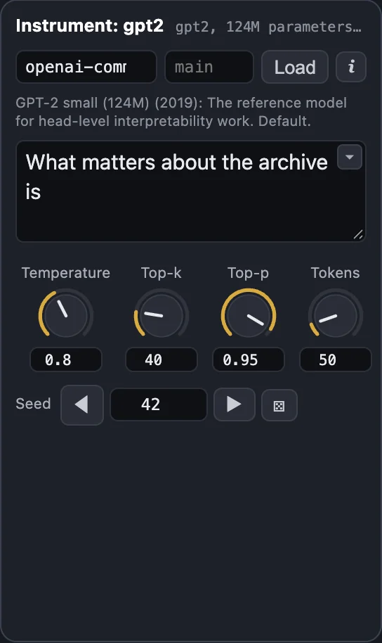

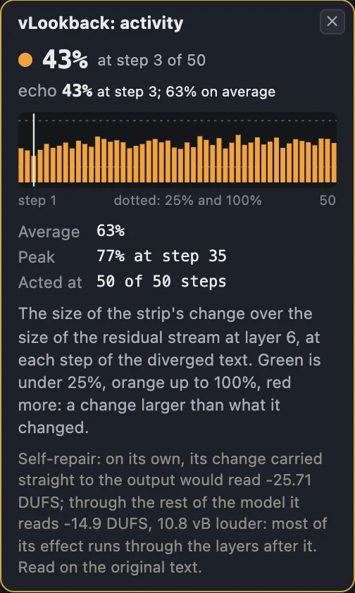

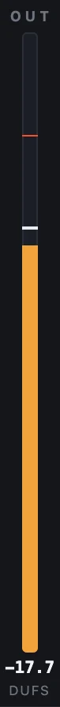

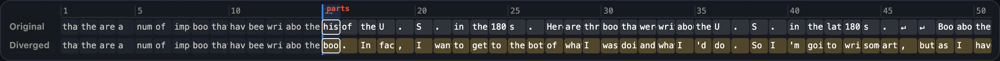


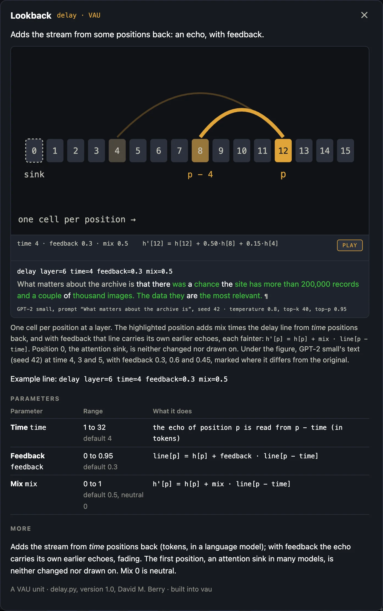
vau package, as on the VAU units page.

Meters after strips. A Steer along the negation direction at layer 6, scale 4. The Tap at layer 8 reads the logit lens at step 1: the unchanged stream points to “ not” (0.53); the steered stream points to “ anymore” (0.97). The Direction meter beside it reads 80.8 along the direction with the chain, −7.8 without.
How it works
The studio is a way into the mechanics, and parts of it fit closely. Each deep dive below starts from a piece of studio kit and says what the model has in its place. The places where the comparison fails are gathered at the end, under Limits of the metaphor.
The signal path
A transformer is a stack of blocks. In GPT-2 small there are 12, each with 12 attention heads and an MLP. The residual stream runs through all of them. Each block reads the stream and adds two things back onto it (what its attention layer writes, and what its MLP writes). In studio terms, then, the stream is a bus and every block is a send and return on that bus. Each block adds to the stream; none replaces it.
The bench numbers the places on the bus as Vectorscope and Ablation Bench do. layer=0 is the token and position embeddings entering block 0; layer=6 is the stream after block 5. A strip at layer=6 sits between blocks 5 and 6 and changes what every later block reads. Strips can also sit on a component: head=5.1, attn=5, mlp=5, block=5.
The figure runs tokens through the 12 blocks with one strip inserted. Toggle the power light, or move the insert point, and watch what reaches the output.
The strip here is a Steer along the negation direction at scale 4. A green dot marks a Tap at layer 8, a meter that reads the stream there without changing it.
Readout values come from a real Tap at layer 8, step 1, after a mean ablation of head 5.1 and a Steer along negation at layer 6, scale 4. They are fixed in the figure; moving the insert point changes where the colour changes, not the numbers.
Directions as bands, Project out as a notch
A direction is a vector in the stream, one per layer. The bench makes them from two lists of texts (the difference of their mean streams, as Vectorscope's Grammar Steering does, or by PCA, inspired by repeng), from one word as the output layer writes it, from a passage against the reference corpus, or from where the model is about to write a word, which is how Arditi et al. read the refusal direction.
A direction can be treated like a band on an equaliser. Steer boosts it, so that steer layer=6 dir=negation scale=4 adds 4 × the direction at every token. Project out is a notch; indeed, project layer=all dir=negation mode=remove takes away the part of the stream that points along the direction and keeps the rest. mode=reflect flips that part, as a polarity switch does. With to=mean the part is set to its ordinary level over the reference corpus instead of to zero (a gentler cut).
In the figure the white arrow is the stream at one token, the amber line the direction. The amber segment is the stream's component along it, the part a notch removes.
Bands of principal directions
Some units borrow the idea of frequency more literally. Here the bench measures each layer's principal directions over a reference corpus with the model unchanged, that is, the directions along which ordinary text spreads most, ranked by that spread. vBands treats the first 8 as its low band, 9 to 64 as its mid band and the rest (65 to 768 in GPT-2) as its high band. It scales each band about the stream's mean (x = h − μ; h' = h + (low − 1) · x V₁₋₈ᵀ V₁₋₈, and so on for the others), while vBandshrink compresses each band separately. In the case of the Vocoder, one prompt's band levels are imposed on the text being written, with bands spaced logarithmically (narrow among the largest directions, wide in the tail) in the way a vocoder's bands are spaced over frequency.
The shape is a sketch. The bars fall off as spread along ranked principal directions does; the band edges (8 and 64 of 768) are the unit's own. The knobs start at the settings of a run on this page (low 1.6, high 0.4, with a vSquash, a vLookback and a vAverage on the same layer), which made GPT-2 write “more more more” for fifty tokens at −4.1 DUFS (see the rabbit holes).
Time in vLookback, vAverage and vRepeat
In a language model, time is position. The text is written one token at a time, and at each position the stream holds that token's state. The time-based units act along that axis, on the stream at one layer.
- vLookback adds the stream from
timepositions back, with feedback:line[p] = h[p] + feedback · line[p − time], thenh'[p] = h[p] + mix · line[p − time]. An echo in tokens. - vAverage adds a decaying average of every earlier position:
tail[p] = decay · tail[p − 1] + (1 − decay) · h[p]. - vRepeat takes positions in runs of
intervaland replays the stream of the few positions before over the lastlengthof each run: a stutter. - vQuantise's
holdkeeps the first position of each run of positions over the rest of the run, a sample-and-hold.
The first position, where models park attention (the attention sink), is left alone: these units neither change it nor draw on it, on every model the Lens loads, since each has a sink there. They keep only the earlier positions they read, so a long run does not grow their memory. Causality holds too. A position can only take from earlier positions, so an echo never arrives from the future.
Envelope over depth
A line that names several layers (layer=all, or block=all for vAbliterate and vMorph) can weigh its change by depth. Every VAU unit, and the bench's own Steer, Project out, Noise and Scale on the stream, takes an envelope from the host: linear tapers in a straight line (as Heretic's kernel does), bell along a Gaussian (as OBLITERATUS weights it), flat is the same within reach. epeak, ewidth and eedge are shares of the depth: where it peaks, how far it reaches either side, and its value at the edge of the reach.
In studio terms this is automation, drawn over the depth of the model instead of over time. Time has its own automation: the window, wfrom and wto, makes a strip act only from one step to another. wfrom=10 is a Steer that comes in at token 10.
gate layer=all keep=0.6 wet=0.8 env=bell epeak=0.6 ewidth=0.3 eedge=0.2 wfrom=10The curve is computed with the host's own formula (vau.hostfx.envelope) over the 13 places of GPT-2 small's stream; the values start at the settings of the vSparsify in the host features screenshot below. While the sliders are left alone, the peak sweeps the depth by itself.

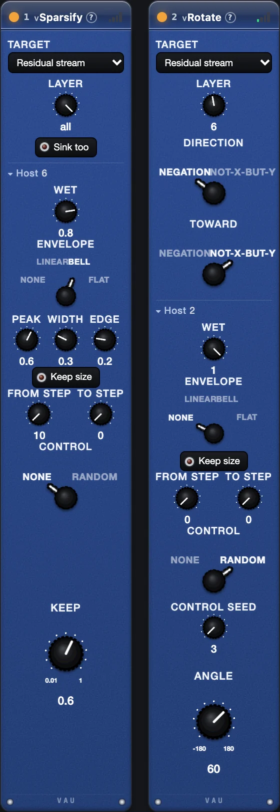

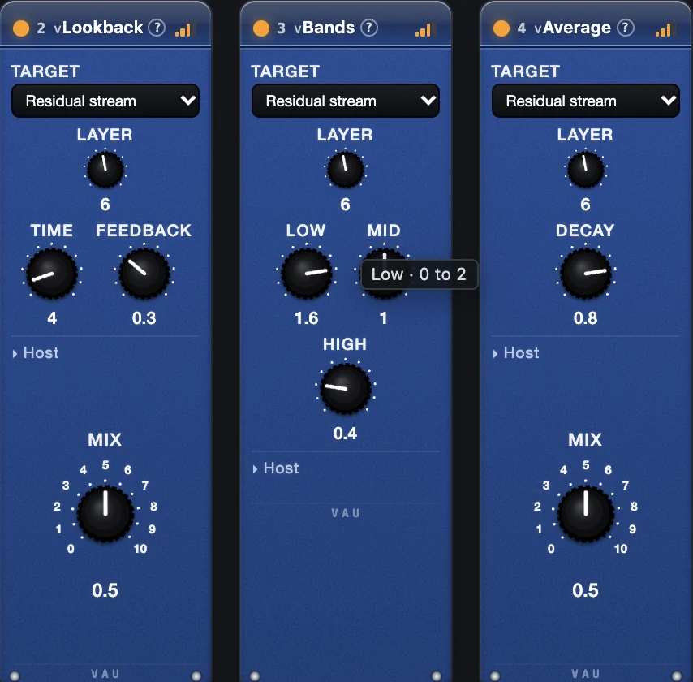

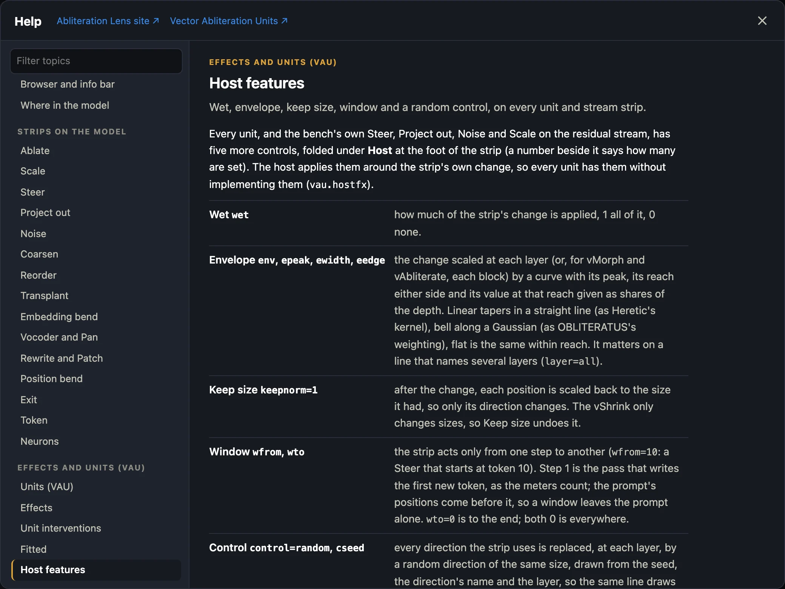
Loudness in DUFS
The OUT column's meter answers one question: how far does the chain move what the model expects next? At each step, both models give a distribution over the next token on the same text. The reading is the KL divergence of the diverged model's distribution from the original's, in bits: the extra bits per token it costs to code the original's next token with the bent model's expectations.
For small changes the KL grows with the square of the change in the logits, as power grows with the square of an amplitude, so it goes into decibels with 10 log₁₀, the way LUFS puts mean square. Full scale is log₂ of the vocabulary, 15.6 bits for GPT-2's 50,257 tokens:
DUFS = 10 · log₁₀( KL / log₂ V )So 0 DUFS is a KL of 15.6 bits, −10 a tenth of it, −20 a hundredth. Ratios of two loudnesses are in vecibels (vB), named so that nobody takes them for sound. The meter gives momentary (one step, the bar; green below −30, amber to −12, red above), short-term (the last 8 steps, the white line), integrated (the whole text, gated as ITU-R BS.1770 gates loudness), range and peak.
The meter reads the original text, which is the same whatever the chain, so two chains' readings compare directly. Mean-ablating head 5.1 of GPT-2 reads about −33 DUFS on the archive prompt; a Steer along negation at layer 6 reads about −15 at scale 2 and −5 at scale 8.
Meters and the logit lens meter
Four strips read the model and leave it unchanged: Tap, Level meter, Direction meter and Attention scope. The desk marks each with a meter badge after its name, and the meter units vEntropy and vPeak share too, so a meter is never taken for an effect that does nothing. They register no hook while the texts are written; after the run, one more teacher-forced pass over each text fills them in, over the original text with the meters alone and over the diverged text with the whole chain. A meter placed after a strip on the same layer reads the stream after that strip.

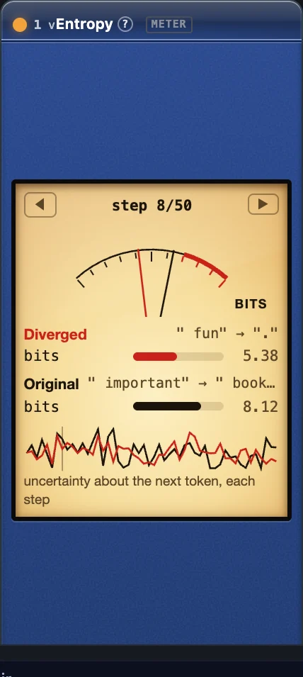

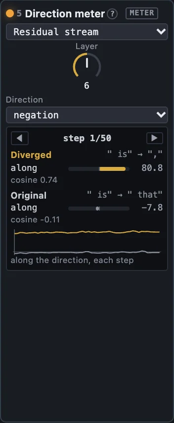
Limits of the metaphor
A direction is not a frequency. Frequencies are ordered and orthogonal; directions made from contrast sets overlap, and nothing orders them. vBands' low, mid and high are principal directions ranked by how far ordinary text spreads along them, and “low” means “largest spread”, nothing to do with pitch.
The output feeds the input. A track does not hear its own effects. Here every diverged token becomes part of what the model reads next, so a change that flips one token changes every step after it. A small wet setting does not give a text halfway between dry and wet; the text is discrete, and a single flipped token sends it elsewhere.
Loudness is a distance from the dry signal. DUFS measures how far two distributions are apart, never how much energy there is. A chain that changes nothing reads silent, however busy its strips. It is always relative to the original.
Later layers answer back. On a desk, the inserts after a compressor leave its output as it is. In a model, later blocks can damp a strip's change or carry it further (the Hydra effect, McGrath et al. 2023). The activity box ends with a self-repair reading, in vB, for this: below 0 the later layers damp the strip's change; above 0 most of its effect runs through them.
A take repeats exactly. A performer never plays the same take twice. A seed does: same model, same chain, same seed, same text, and the tool checks this when it regenerates a recipe. The control band stands in for the variation between takes, by reseeding the original n times.
Positions are not samples. A delay of 4 is four tokens, whatever their length. Each position is a 768-number state, and the model looks back over every earlier one through attention, which no audio buffer does.
Vector Abliteration Units Available
The effects, unit interventions, fitted units and meter units are Vector Abliteration Units (VAUs) from VAU's Core Collection, installed as the Python package vau; the browser lists them under VAUs, by collection. Each is one file with a manifest; the desk, the browser, the Help box and the Code view are built from it, and a control that applies only under another setting is dimmed while it does not (vAbliterate's Peak, Width and Edge while its Shape is flat). The tips below are the units' own, as the desk shows them on hover.
Each strip as the desk draws it, at the unit's example line after a run of GPT-2 small (“What matters about the archive is”, 50 tokens, seed 42); each opens the unit's help page. Scroll along the row for all sixteen, and click a strip to see it larger.

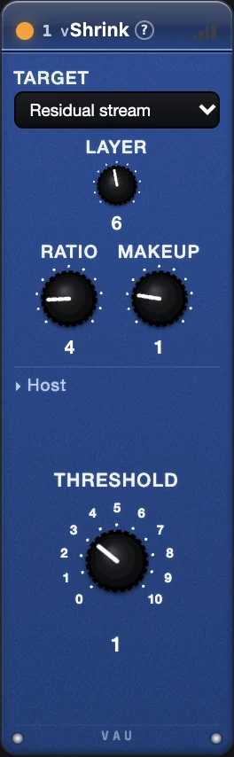
compressorAbove a threshold, reduces the stream's size at each position by a ration > T: n' = T + (n − T) / ratio
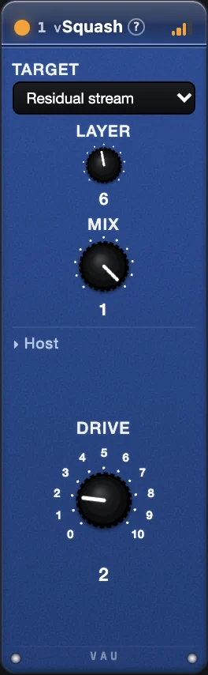
saturatorSoft-clips each dimension, harder as the drive risesh' = (1 − mix)·h + mix · L·tanh(h / L)
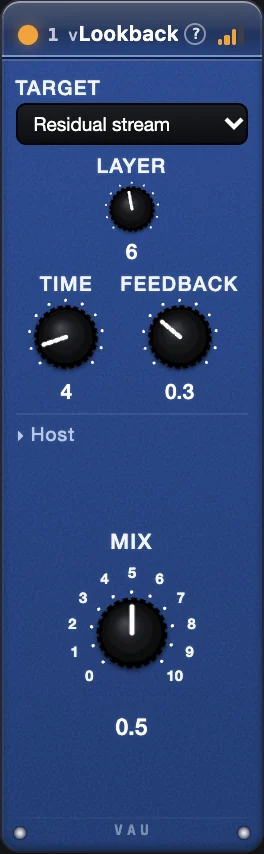
delayAdds the stream from some positions back, with feedbackh'[p] = h[p] + mix · line[p − time]
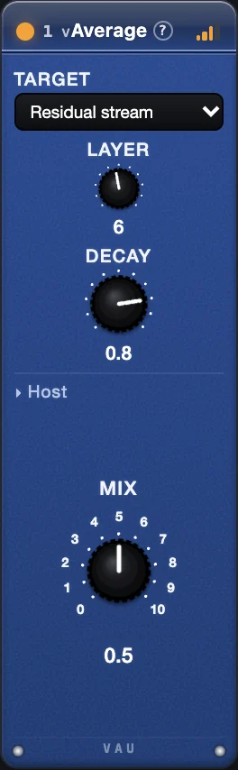
reverbAdds a decaying average of the earlier positionsh'[p] = h[p] + mix · tail[p − 1]
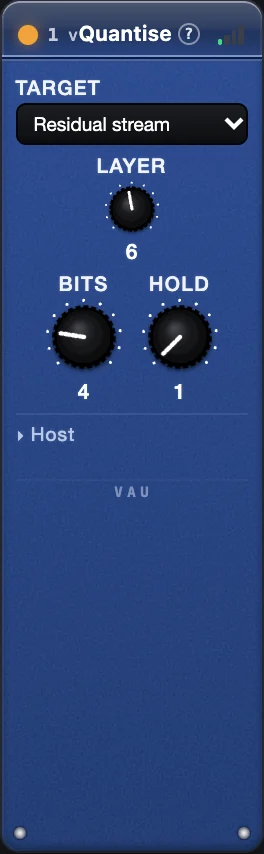
erosionQuantises the stream to few levels, or holds it over several positionsh' = round(h / s) · s, s = 6σ / 2^bits
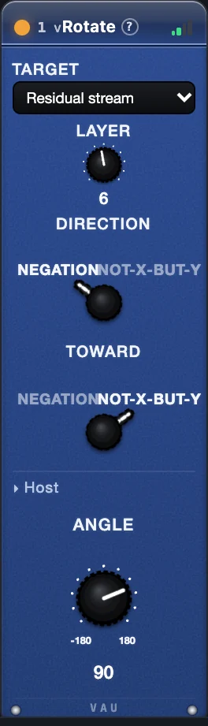
shifterRotates the stream in the plane of two directions(h·e₁, h·e₂) rotated by angle°
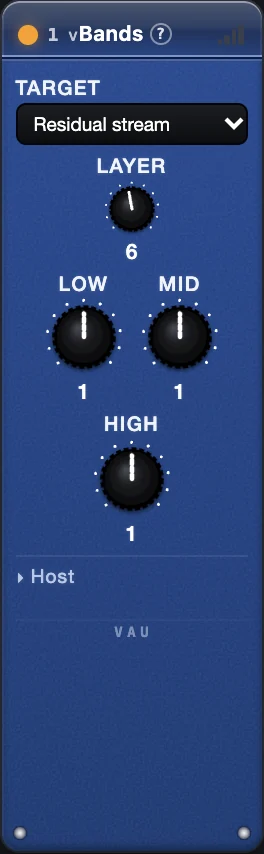
eqScales three bands of the stream's principal directionsh' = h + (low − 1) · x V₁₋₈ᵀ V₁₋₈
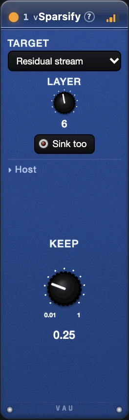
gateKeeps each position's largest components and zeroes the restkeep the ⌈keep · d⌉ largest |hᵢ|
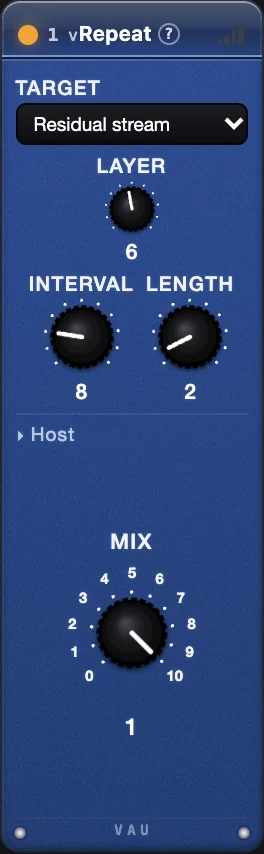
beatrepeatReplays the stream of the few positions before over the last few of each runh'[p] = (1 − mix) h[p] + mix · h[p − length]
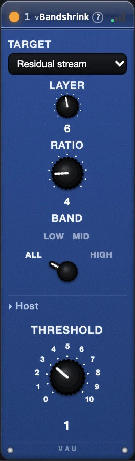
multibandCompresses three bands of principal directions separatelyL_b = thresh × typical ‖band b‖
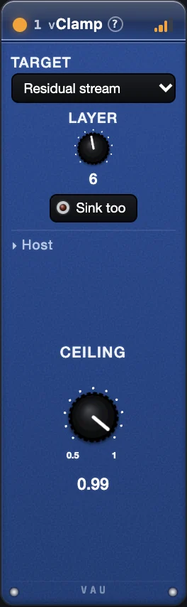
limiterClamps each position's largest components at a quantile ceilingL = quantile(|h|, ceiling); h' = clamp(h, −L, L)
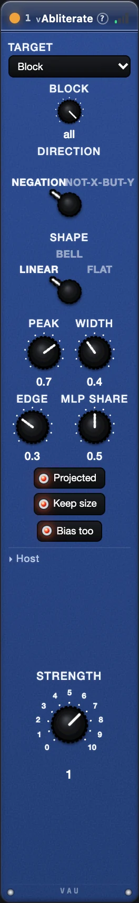
abliterateRemoves a direction from what attention and MLPs write, strongest at one blocky' = (I − s vvᵀ) y
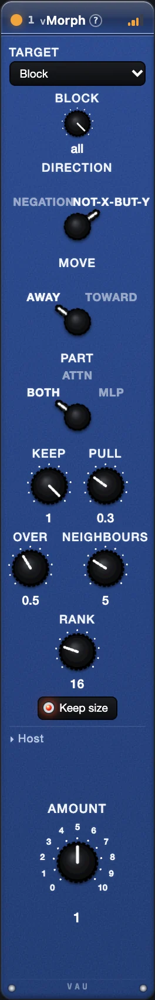
morphA fitted low-rank change moving one side of a direction's texts toward the othery' = y + amount · (x Aᵀ) Bᵀ
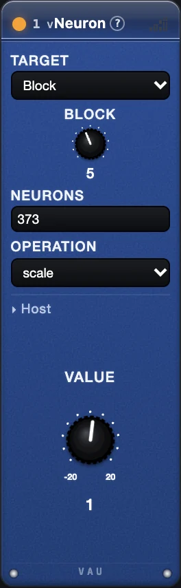
neuronEdits named MLP neurons: scale, add, set, zero, flip, clampneuron block=11 n=611 op=zero
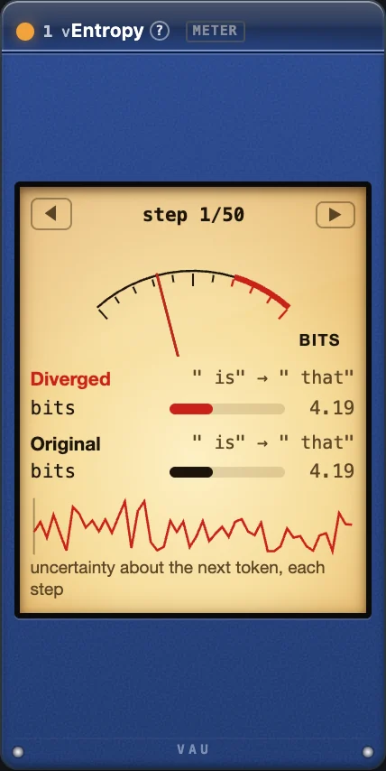
entropyHow uncertain the model is about the next token, in bitsreads the logits
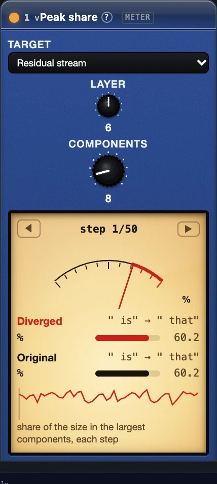
peakshareThe share of the stream's size held by its largest componentsΣ top-k hᵢ² / Σ hᵢ² × 100
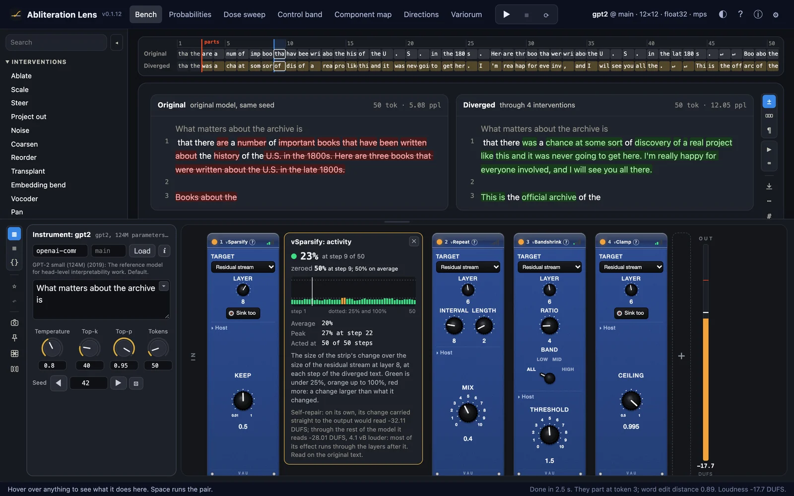
Zoom
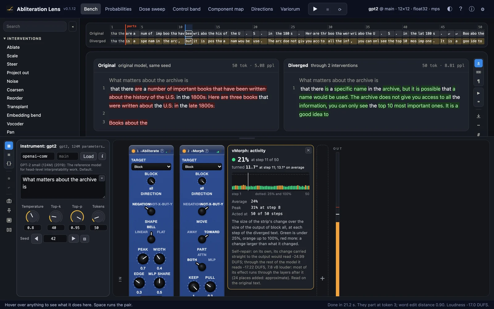
ZoomViews
The top bar has seven views: Bench, Probabilities, Dose sweep, Control band, Component map, Directions and Variorum. Every screenshot here is GPT-2 small, prompt “What matters about the archive is”, 50 tokens, seed 42, unless the caption says otherwise.
Probabilities
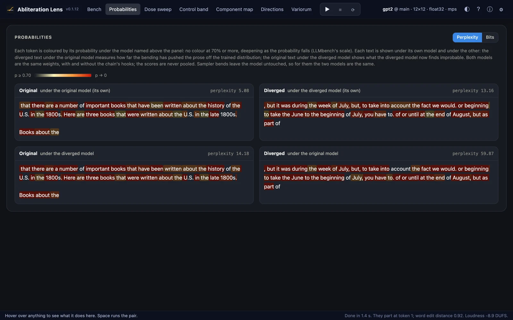
ZoomDose sweep

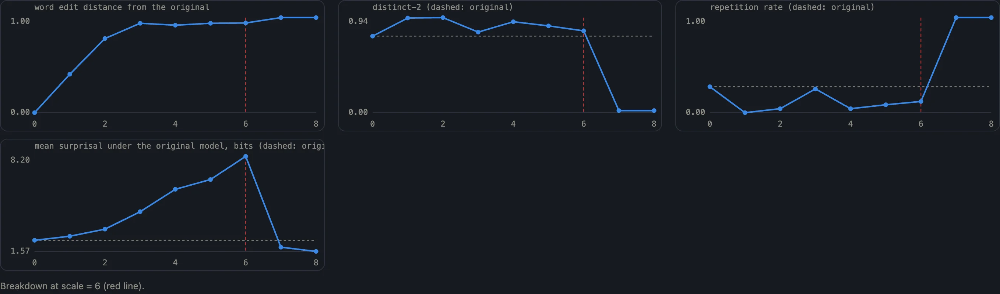
Zoom
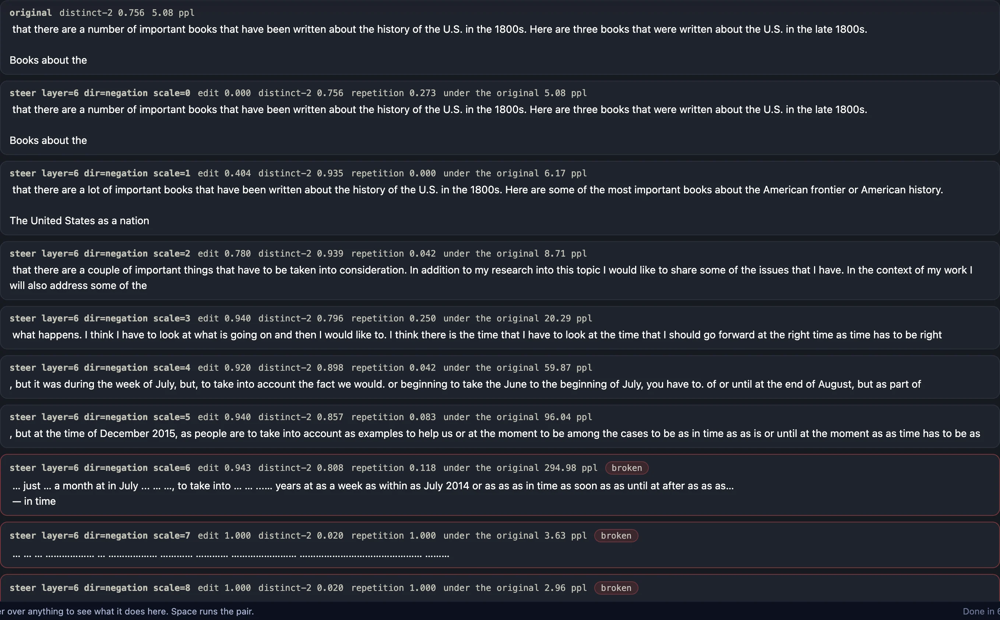
ZoomControl band
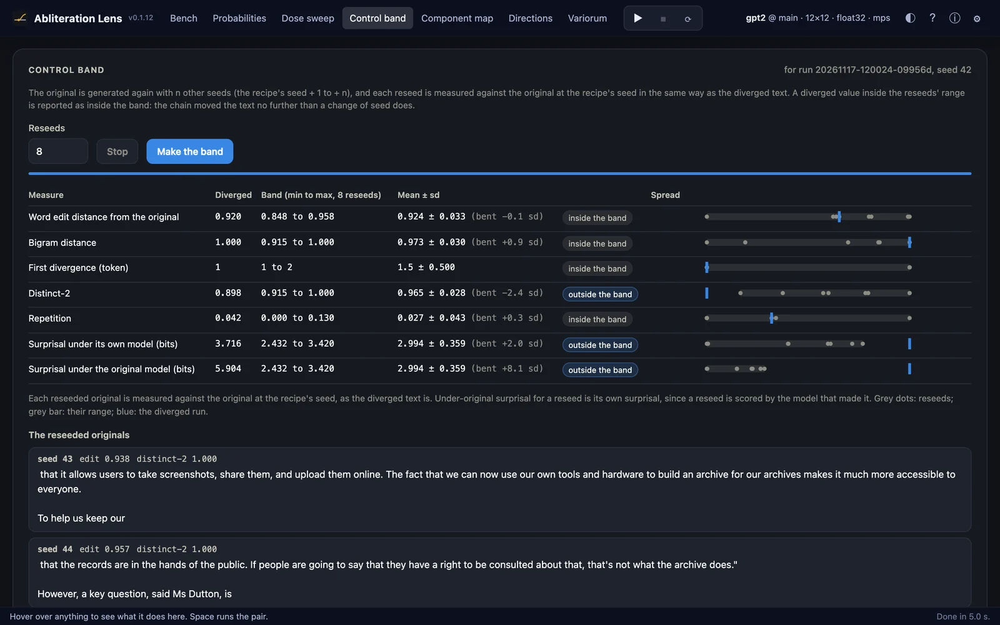
ZoomComponent map and Sweep

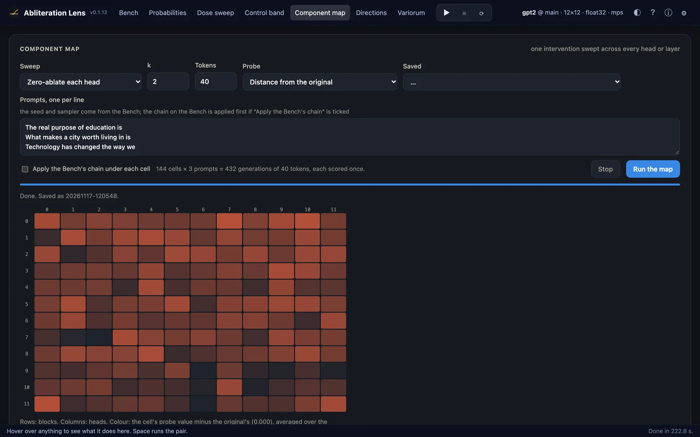
Zoom
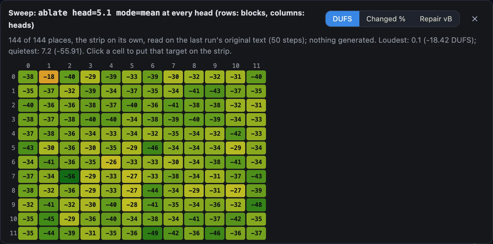
ZoomDirections and Variorum

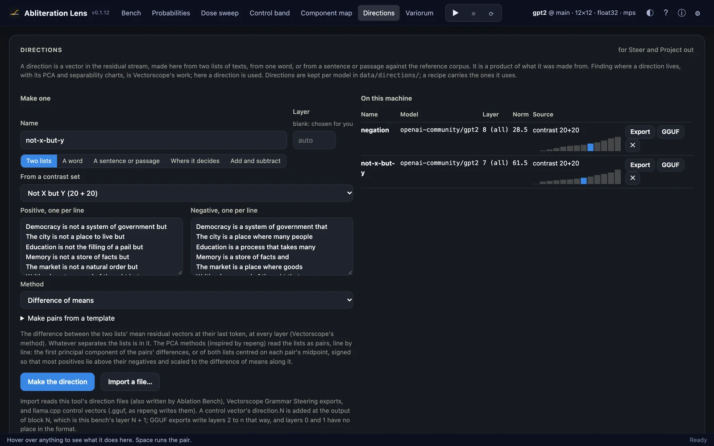
Zoom
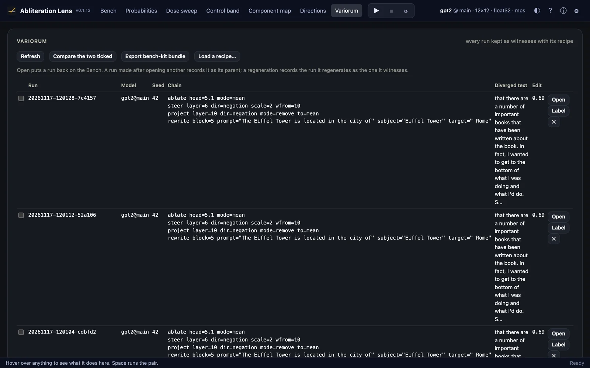
Zoom
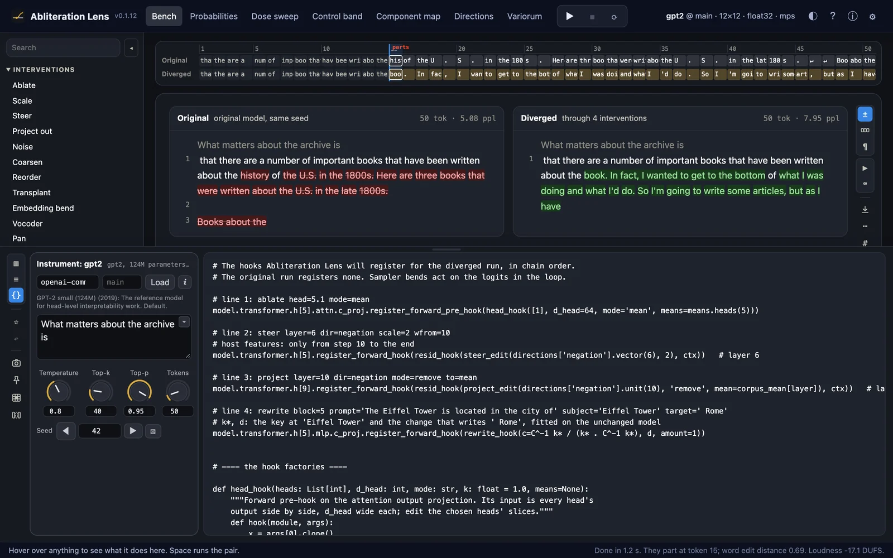
ZoomRecipes
Chains to type into the text view (≡ in the dock), one strip per line, # to bypass a line. Numbers are from the Help box's findings or from the runs on this page, on GPT-2 small.
A notch at the decision point
project layer=10 dir=<decision direction for " not, never, no"> mode=removeThe direction is made under Directions ▸ Where it decides. Over four prompts and four seeds, negation words fell from 23 per 1,000 to none at −13 DUFS, with the texts intact.
The same notch, set to the mean
project layer=all dir=<decision> mode=remove to=meanMean-referenced erasure, as OBLITERATUS offers it. On every layer it kept the texts intact (26 per 1,000, −11.3 DUFS) where removing to zero on every layer collapsed them.
Rome
rewrite block=5 prompt="The Eiffel Tower is located in the city of" subject="Eiffel Tower" target=" Rome"Inspired by ROME. The chance of “ Rome” rises from 0.005 to 0.81; after “The Louvre is located in the city of” it stays at 0.006. With save=name the edit is kept as a Patch.
Attention panned to the end
pan block=all depth=4 pan=1Biases attention toward the most recent tokens. Head 5.1's average look-back falls from 19 tokens to 3, and GPT-2 repeats itself.
Vocoder, half wet
vocoder layer=6 prompt="The storm broke over the sea" bands=16 mix=0.5The storm's band levels on the archive's carrier. Mix 0.5 changes the text and keeps it fluent (−20.7 DUFS); mix 1 breaks it apart (−8.6).
A late Steer
steer layer=6 dir=negation scale=2 wfrom=10The window keeps the prompt and the first nine tokens dry. In the run in section 01 it sat with three other strips, and the texts shared fourteen tokens before they parted.
A Steer and its random control
steer layer=6 dir=<decision> scale=1 steer layer=6 dir=<decision> scale=1 control=random cseed=1Run on its own, the Steer gave 43 negations per 1,000 at −20.6 DUFS; random directions of the same size gave 19 and 31 at about the same loudness. The random pushes were as loud without the rise.
Early exit
exit layer=8Writing from layer 8 through the final norm and the output layer runs the model a Tap reads as the writer. Layer 11 is still fluent (−10.6 DUFS); after layer 8 it repeats (“not necessarily necessarily”).
A bell-shaped vSparsify
gate layer=all keep=0.6 wet=0.8 env=bell epeak=0.6 ewidth=0.3 eedge=0.2 wfrom=10Sparsifies the stream most at about two thirds of the depth, from token 10 on. With a vRotate under random control it read −26.5 DUFS, word edit distance 0.83.
Rabbit holes
Things to try that lead somewhere odd. Most of them end in a strange text and a question about what the model is doing.
More more more
saturator layer=6 drive=2 mix=1 delay layer=6 time=4 feedback=0.3 mix=0.5 eq layer=6 low=1.6 mid=1 high=0.4 reverb layer=6 decay=0.8 mix=0.5
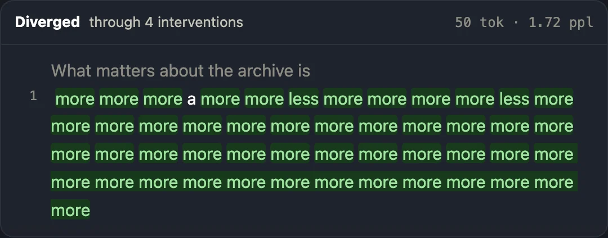
Four effects on one layer, each mild on its own. Together GPT-2 writes “more more more” for fifty tokens, word edit distance 0.98, −4.1 DUFS. Leave one out takes one strip out at a time and shows which one carries it.
Negations from a negation notch
vAbliterate at full strength, with a flat kernel and the shipped negation contrast set, raised the rate of negations to 57 per 1,000 (the original 23). That direction is read at the end of sentences such as “The door is not open”, after the “not”: it marks having negated. The decision direction, read before the word, is the one that removes it.
The ellipsis floor
In the dose sweep above, surprisal under the original model peaks at scale 6 (295.0 perplexity) and then falls to 2.96 at scale 8, below the original text's 5.08. The text by then is ellipses. A low surprisal can mean a text has collapsed.
Inside the band
A word edit distance of 0.92 sounds like a large change. The control band says another seed moves the words as far (0.848 to 0.958). Here the surprisal under the original model is what sets this Steer apart: 8.1 standard deviations outside the band.
Self-repair across the heads

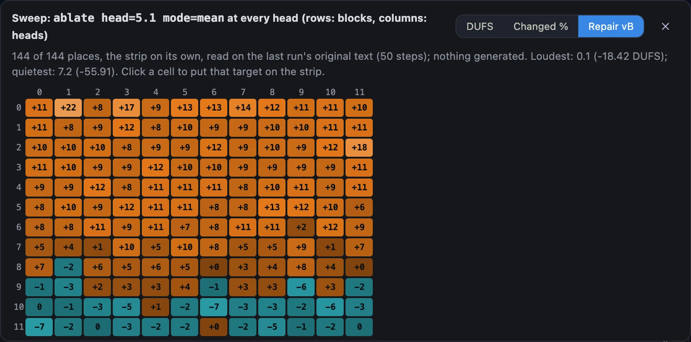
With the Sweep set to Repair vB, mean-ablating a head in blocks 0 to 6 reads mostly +8 to +13 vB, and in blocks 9 to 11 mostly below 0. In this grid the early heads' changes run on through the layers after them, and the late heads' changes are damped.
Negation and the top three neurons
The Neuron finder's top three for “ not, never, no” are all in block 11. Zeroing them left the rate at 27 per 1,000 (the original 23); scaling them by 4 gave 24. The decision direction, spread over the whole stream, halves it or removes it.
Position shift
position mode=shift k=600Tell GPT-2 it is 600 tokens further into its text than it is. It collapses into “all and all a all all” (−2.8 DUFS). Scramble and freeze lose word order at about −6.
The distance an embedding can travel
embed swap=" archive, museum" mix=0.3Here “archive” is read with its embedding moved part of the way to “museum's”, and a Dose sweep on mix runs it through: halfway leaves the words as they were (−22 DUFS), all the way changes them (−18).
Pythia's training as a timeline
With Pythia 160M or 410M loaded and a Revision set (step1000 to step143000), the same chain on earlier checkpoints of the same model asks when in training a component started to matter.
Tips
- Hovering over a knob shows its name and range; the info bar at the foot of the window gives its tip, a formula where the change is one, and how to use the control. A double-click on a knob resets it.
- Slow it down: the tempo under Replay sets how fast the texts are written out, for a run and for a replay, so you can follow where they part.
- Pinning a run sets later runs against it as well as against the original, the quickest way to hear what one change did.
- Leave one out runs the chain once without each strip and marks each strip with how much the text changes without it.
- Snap (the camera) saves the Bench as a PNG exactly as it is on screen; the Export menu's Figure draws a run as SVG from its data.
- Dragging a direction from the browser onto a Steer, Project out or Direction meter strip sets it.
- Your own units go in
data/units/; Rescan units loads them, and the desk marks them ◆ as not built in.
Getting started
Requirements: macOS on Apple Silicon (MPS) or Linux, Python 3.12, and uv or pip. A model must be in the Hugging Face cache, or loading it downloads it.
git clone https://github.com/vector-lab-tools/abliteration-lens
cd abliteration-lens
./setup.sh # a virtual environment in .venv, then requirements.txt
./launch.sh # starts the server on http://127.0.0.1:8774/ and opens the page
.venv/bin/python -m pytest -q # the tests load GPT-2The server listens on this machine only, refuses requests with a foreign Host header and refuses writes without its own header. There are no accounts, no telemetry and no remote inference.
| Model | Year | Notes |
|---|---|---|
| GPT-2 small (124M) | 2019 | The default. Much of the published head-level interpretability work uses it. |
| Qwen3 0.6B | 2025 | A recent Llama-style model, in bf16. |
| Pythia 160M, 410M | 2023 | With EleutherAI's training checkpoints, in the Revision box. |
| Llama 3.2 3B (base) | 2024 | Larger; chains run, a full head map is slow. |
Any model in the Hugging Face cache, or a folder holding a checkpoint, can be typed into the picker. GPT-2, GPT-NeoX (Pythia) and Llama-style models (Llama, Qwen, Mistral, OLMo-2) are supported, loaded with trust_remote_code=False. Models under a billion parameters load in float32 so that runs regenerate exactly.
Settings, Models lists them, marked downloaded or not, and opens a deep dive on each: who made it and when, its licence, its architecture and size, the memory its weights need against what the machine has free, its training data, which strips run on it, and a Load button. The (i) on the Instrument opens the same deep dive on the loaded model. All of it is read from the model's files on the machine.
Vector Abliteration Units
Abliteration Lens is the first host of VAU 1, a standard for units that change, or read, what a model does from inside. A unit declares its parameters, the kind of place it acts on (the stream, a component's output, weights, the logits) and what it needs from its host; it never registers a hook itself. That is, the unit asks, and the host attaches it, measures it and takes it off after the run. The host features (wet, envelope, keep size, window, random control) come from the host as well, so that every unit has them without having to implement them.
Credits
Terence Broad
Terence Broad's ideas strongly influenced this project. It took shape after I heard his Sussex AI seminar, “Expanding the generative space”, at the University of Sussex's Sussex AI research centre on Wednesday 14 October 2026. His network bending, deterministic transformations inserted as layers into a trained generative network and applied while it runs, and the active divergence he and his co-authors survey, are the ideas the desk applies to a language model.
- Broad, T., Berns, S., Colton, S. and Grierson, M. (2021) “Active Divergence with Generative Deep Learning: A Survey and Taxonomy”, Proceedings of the 12th International Conference on Computational Creativity (ICCC 2021). arXiv:2107.05599.
- Broad, T., Leymarie, F. F. and Grierson, M. (2021) “Network Bending: Expressive Manipulation of Deep Generative Models”, EvoMUSART 2021: Artificial Intelligence in Music, Sound, Art and Design. arXiv:2005.12420.
Inspirations for the units and strips
- ROME (Meng, Bau, Andonian and Belinkov 2022), for Rewrite's rank-one edit to one MLP.
- repeng (Theia Vogel's library for control vectors), for directions by PCA, pairs from a template, and sums of directions.
- Contrastive decoding (Li et al. 2022), for the Contrast strip.
- Arbitrary-Rank Ablation in Heretic (Weidmann 2026), for vMorph's objective; Heretic's kernel for the linear envelope and vAbliterate.
- OBLITERATUS, for mean-referenced erasure (
to=mean), the bell weighting, winsorization in the vClamp, the Neuron finder's scoring, and the question the Sweep asks. - Arditi et al. (2024), for reading a direction where the model decides; McGrath et al. (2023), for the Hydra effect that self-repair measures.
- Ableton Live, whose audio devices inspired the effects, and whose layout inspired the Bench. Abliteration Lens is not affiliated with Ableton.
Parts from the sibling tools
Vectorscope (model loading, contrastive directions, the fake-quantisation kernel for Coarsen), LLMbench (the Grammar Probe patterns, the stance word lists, the six annotation types, the probability scale), Video Kintsugi (the mixing desk, the Text and Code views, the local server's guards), bench-kit (witnesses, numbered lines and descent) and Ablation Bench (a shared direction format and layer numbering).